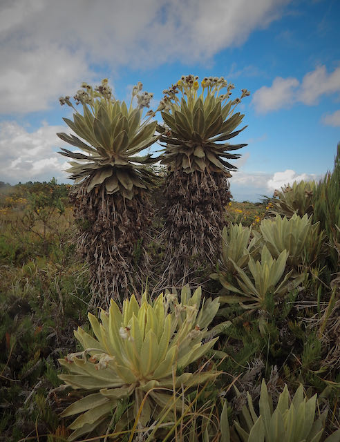
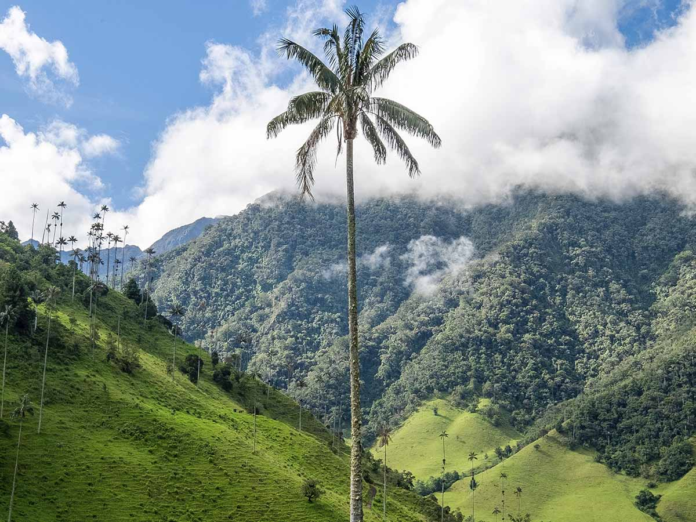
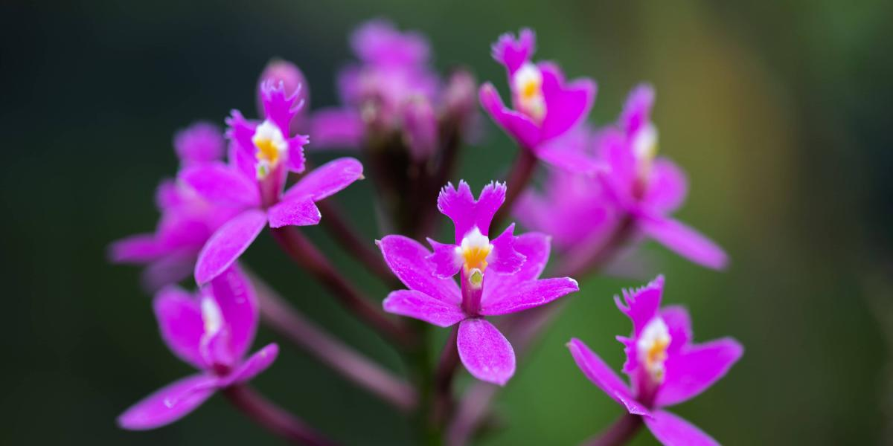
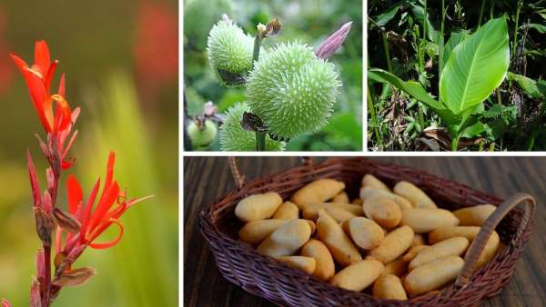
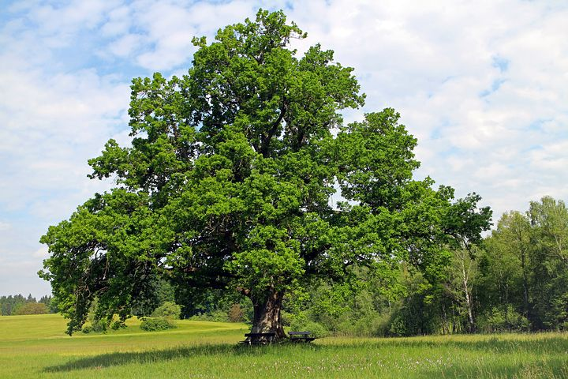

Frailejón (Espeletia)

Es la planta más icónica de los páramos andinos.
Su función vital es capturar la humedad de la niebla
y liberarla en el suelo, actuando como una "fábrica de agua".
Su crecimiento es muy lento, tan solo 1 cm por año.
Palma de Cera (Ceroxylon quindiuense)

Árbol nacional de Colombia. Alcanza alturas de hasta 60 metros.
Es vital para el ecosistema, proporcionando hogar a especies
como el Loro Orejiamarillo. En Boyacá, se encuentra en zonas
de alta montaña.
Orquídea (Cattleya Trianae)

La flor nacional de Colombia. Esta especie epífita (crece sobre
otros árboles sin parasitarlos) se caracteriza por sus pétalos
rosados o lila y un labelo de color intenso, habitando los
bosques húmedos andinos.
Canna idica (Achira)

La achira, conocida científicamente como Canna indica o sagú,
es una planta de origen andino cuyo rizoma es la fuente de un almidón
muy valorado en la gastronomía colombiana.
Boyacá es uno de los departamentos donde se cultiva la planta de achira (sagú),}
de cuyos rizomas se extrae la harina (almidón) que es la materia prima esencial para el bizcocho.
Este cultivo, al igual que en otras regiones, ha sido históricamente importante en el altiplano cundiboyacense.
roble (Quercus)

Son árboles de gran porte (hasta 40 metros), de crecimiento lento y muy longevos.
Tienen una corteza gruesa y rugosa, y hojas generalmente lobuladas.Su fruto característico es la bellota
Se dividen en dos grupos principales: Robles Blancos (madera clara, como Q. alba)
y Robles Rojos (madera con tonos rojizos, como Q. rubra).